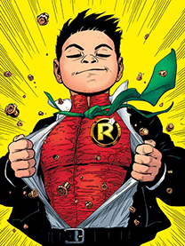

Damian Wayne
History
Damian Wayne is the son of Batman and Talia al Ghul. This makes him an heir to the world's greatest crime-fighter, and its greatest super-villain Ra's al Ghul. Damian became the fifth Robin, working alongside Dick Grayson as Batman.
Batman and Son
Damian was seven years old when Talia had him spy on Bruce with her.[1] Talia revealed Damian's existence to Bruce Wayne at ten years old and left him in his father's custody in an effort to disrupt Batman's work. Precocious, spoiled, selfish and violent, Damian battled Robin (Tim Drake), whom Damian wanted to replace as Batman's sidekick, and sucker punched him off the T. Rex model in the Batcave. Grounded by Batman, Damian escaped, donned a variant Robin costume made of Jason Todd's old tunic and assorted League of Assassin gear, and got into a fight with the villainous Spook, whom he decapitated. Although misguided and malicious, Damian seemed to genuinely want to aid Batman's war on crime as Damian saw himself as Wayne's true son though that remained unconfirmed. Eventually, Batman confronted Talia, but both Talia and Damian were soon caught in an explosion. They survived the explosion, but a badly injured Damian required transplants of harvested organs, which his mother ordered her physicians to carry out. Damian made a full recovery.